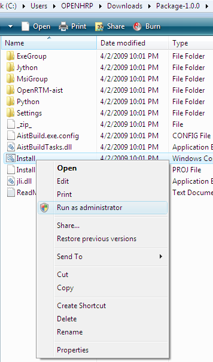
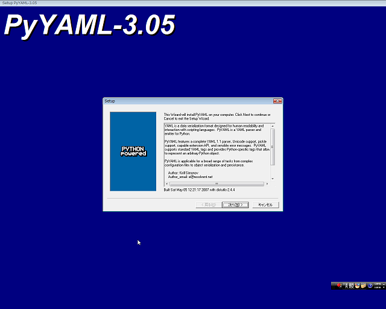
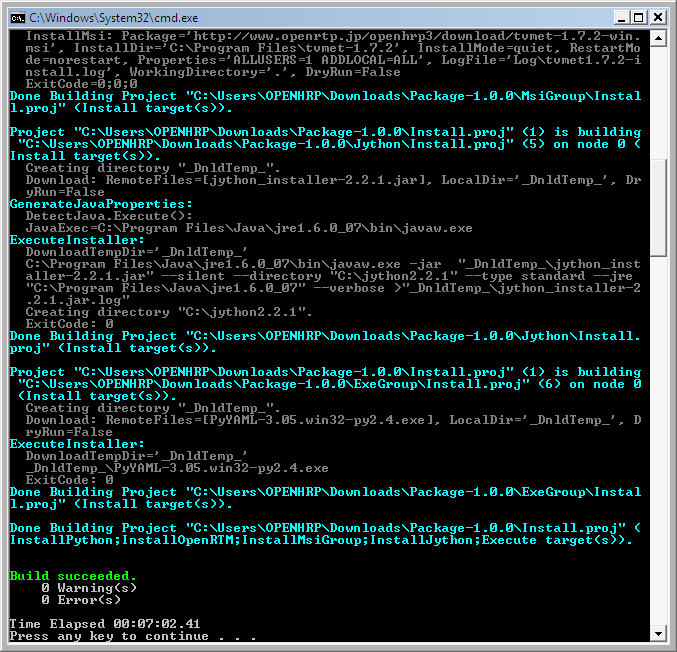
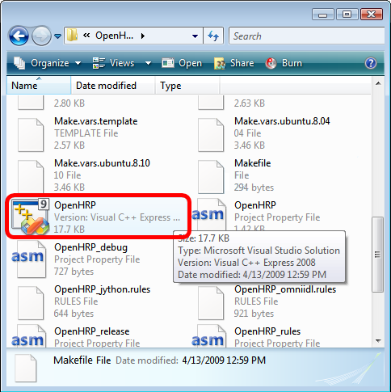
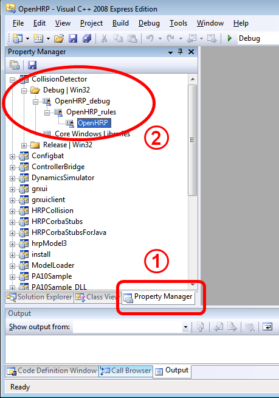
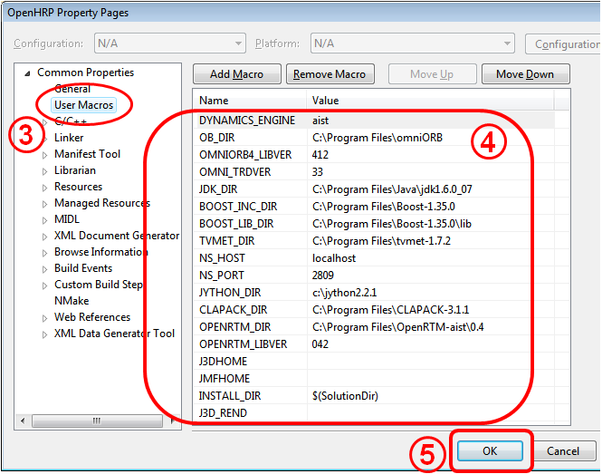
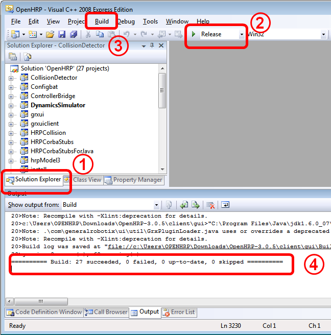

Setup EnvironmentAt first, please install required softwares to compile/run OpenHRP as belowing procedures. If you have already installed a compatible version of following software, you can simply skip that part of installation and use the currently installed package. Also you are free to browse and change the installing path and set where ever you wish to install. If you choose a different location instead of default installing path, please beware to set the Complie property in "Property page" as explained below. Installing Visual C++ Compiler
Currently we support Visual C++ 2008 as C++ compiler for Windows. You can use Express Edition as well as commercial editions of Visual C++ provided by Microsoft. If you wish to install the Express Edition, use the following link and download the web-installer of "Visual C++ 2008 Express Edition". Proceed the installation process, according to the installer instructions. You don`t have to change the installer options. Just keep it as default.
Installing JDKPlease download "JDK for windows" from the download page of JavaSE at http://java.sun.com/. Currently, we have checked and confirmed the compatibility issues with versions of JDK5 and JDK6. Once you run the downloaded file, installer of JDK will be launched. Please install as guided by the installer. You can proceed with the default installer settings, witout making any changes. Installing supported softwaresTo complete the environment configuration, there are some other supported softwares other than above mentioned, need to be installed on your system. To make the download and install process of those softwares ease and automate, we have developed and introduced an "Environment Configurator" package, starting with OpenHRP Ver.3.0.3 . If you are newly installing OpenHRP on your system, please visit Downloading related softwares page in this site; then download and run following package. It will handle the rest of the configurations of your system environment.
Please note that, this configurator requires "Windows Installer 3.1" and ".NET Framework 3.5" or later version installed on your system. If you are updating OpenHRP or if you are willing to install those supported softwares individually, please go through "OpenHRP3 Supported Software's Installation". When you download and extract "Package-1.0.1.zip", you will have a folder called Package. Within the Package folder find the file "install.cmd" and run it. .¥Package¥Install.cmd
This will start downloading supported softwares and installing automatically.
 During the installation process, a sub-installer called PyYAML will be pop-out in GUI mode (Figure 2). Proceed the sub-installer pressing Next button with the default installer settings.
 When the installation completed successfully, it will be showed as Figure 3;
 After the completion of installation process, you may delete the Package folder. Followings are the supported softwares you just installed;
Extracting OpenHRP PackagePlease download the OpenHRP3 source archive from "Downloading OpenHRP3" page and extract it to a appropriate directory.
Note: Project Compilation using Visual C++How to open projectGo to the directory where you have extracted OpenHRP(the home directory of OpenHRP). Locate and double click on the file called "copyprops.bat". The property sheet "rtm_config.vsprops" is copied. Double click on the file called "OpenHRP.sln"(Figure 4).
 OpenHRP Project will be open in Visual Studio, as shown in Figure 5. Configuring Compile PropertiesFirst, open the property page according to the following steps(Figure 5) :
 Then you will lead to the Property Page(Figure 6), where you can configure the references of installed libraries.

The above property settings have been written in a XML file called "OpenHRP.vsprops", which placed in OpenHRP source folder. It is possible to edit this file directly, before starting Visual C++ IDE. Building the ProjectOnce properties are configured correctly, you can build the project as below.

Finally, the results will be shown as In case of compilation failiure, recheck the Setup Environment from the beginning and confirm whether everything went correctly. Open the "Error list" window of Visual C++, and check the error in detail.(To open Error list: Select 'View' -> 'Other winows' -> 'Error list'. Error winodow will be displayed at the bottom of Visual C++ window, along with 'output' window.) Once you built successfully, run Sample Simulation, and check whether the build works correctly. Library files of OpenHRP will also be generated in the place where you specified as 'INSTALL_DIR'. It is better to append this directory to your computers' PATH, so then in future you can make/run programs which uses OpenHRP. |
|||||||||||||||||||||||||||||||||||||||||||||